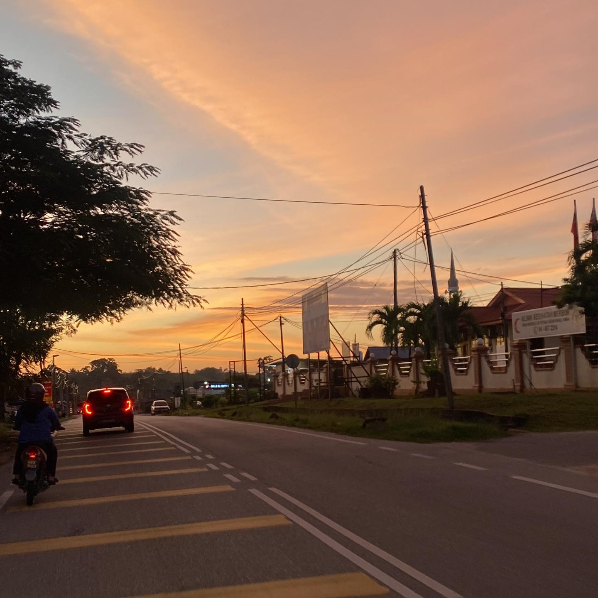
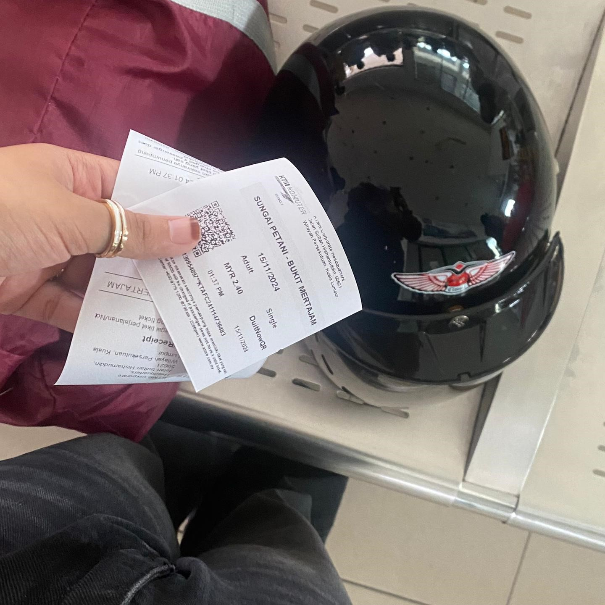
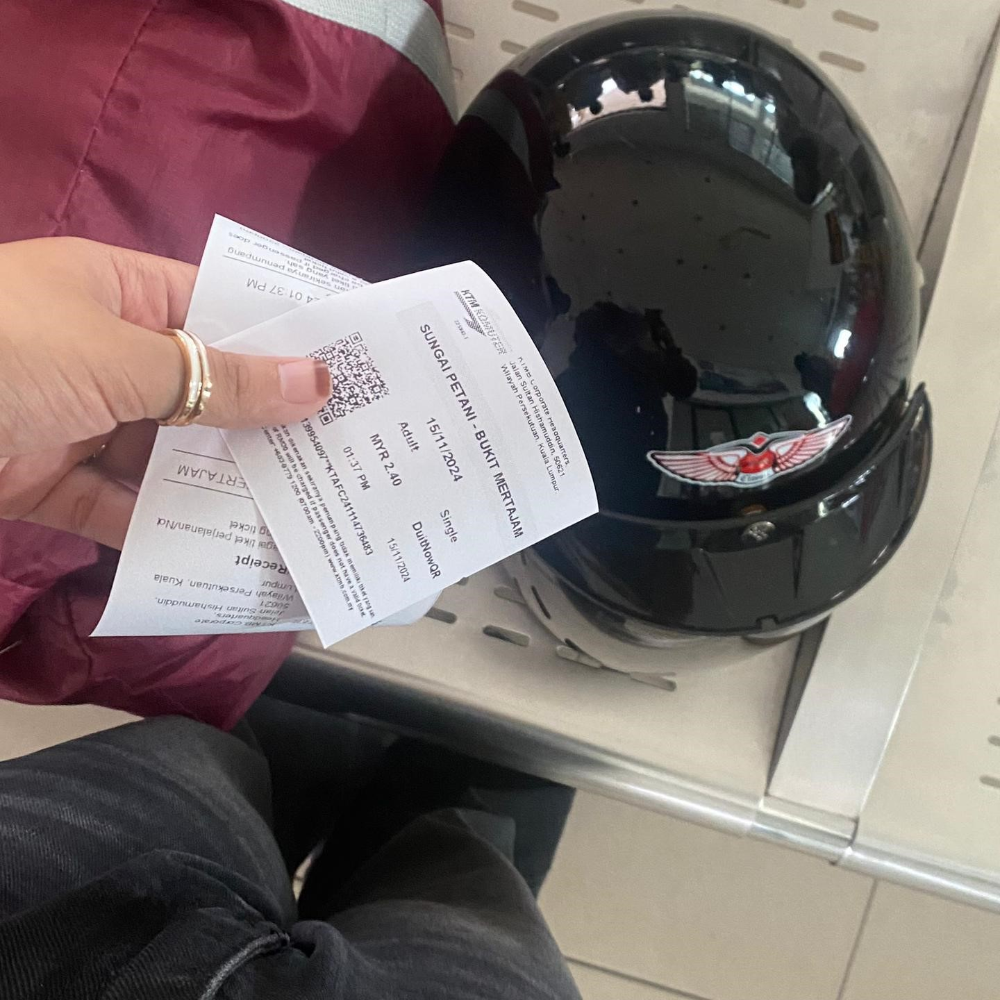
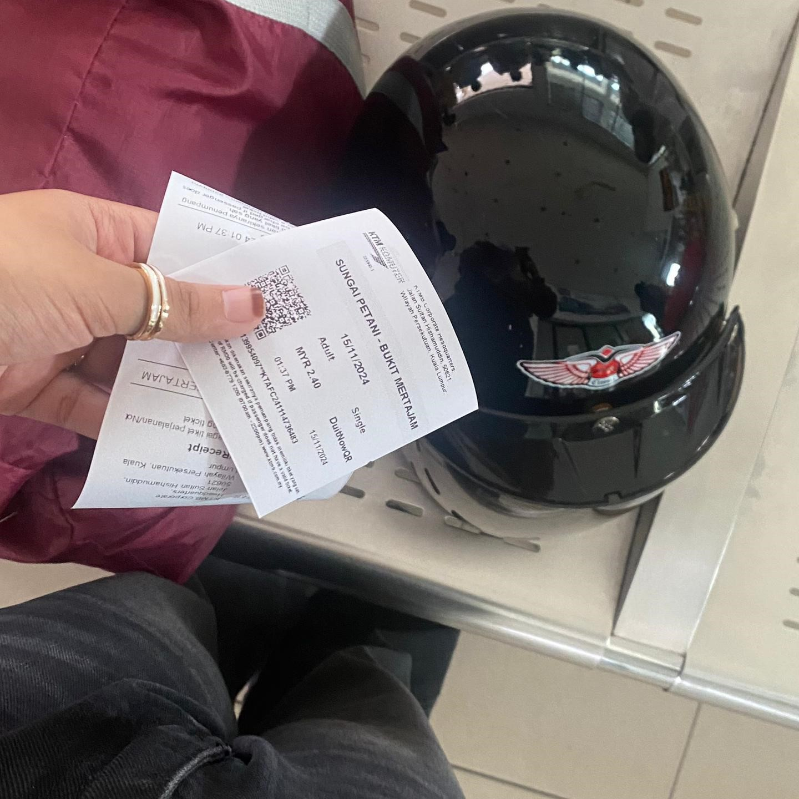

| Name | NUR ALIA AMIRA BINTI SHAIDIN |
|---|---|
| Date of Birth | 29 JULY 2004 |
| Location | Penang, Malaysia |
| Program | Diploma in Information Management |
| Hobbies | Reading, Traveling, Listening to music |

 

